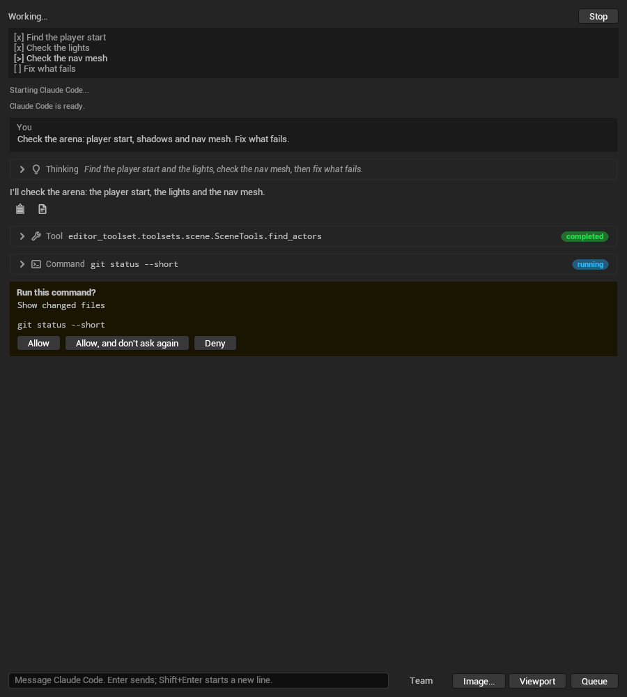
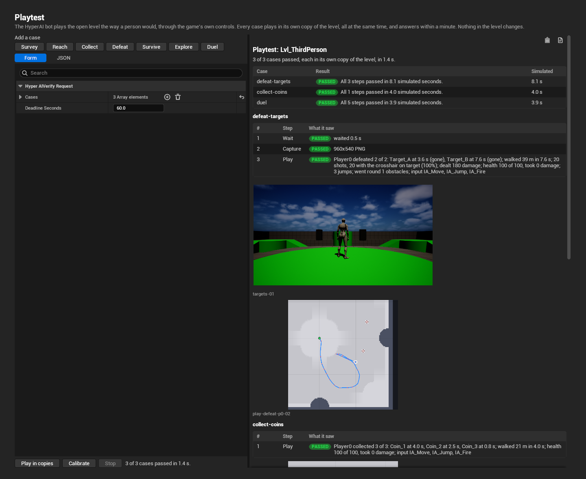

All agents, one chat.
The Chat page runs Claude Code, Codex or Gemini inside the editor, and any of eight more agents you have installed: GitHub Copilot, Cursor Agent, OpenCode, Goose, Qwen Code, Kimi, Cline and Auggie. By default it uses HyperAI's own native view: the transcript as a readable report, each tool call as a line you can open, the agent's plan as a checklist, pictures inline, and approvals as buttons. Token use and context fill show at the top right.


- Up to four chats run side by side; + opens another. Each tab shows whether its agent is working, waiting for you, or blocked.
- Replies are reports. Agents answer in Markdown; tables with
PASS,FAIL,WARNandINFOrender as badges, and a picture on its own line opens on the Match page. - The terminal view is one switch away (Native View), for anything the CLI does that the native view does not show.
- Auto lets Claude Code and Codex approve their own routine commands and tool calls, so a chat does not stop to ask at every step: Claude Code runs in its auto mode, and Codex has its own reviewer judge each approval. Risky actions are still stopped.
- Chats lists this project's past Claude Code and Codex conversations, read from each agent's own history, to reopen where they stopped; in the native view a reopened chat shows what was said before. Its sections fold: Pinned, your own groups (make one with the folder button and move chats in from their right-click menu), then the dates. All, Claude Code or Codex picks whose chats show. Deleting a chat sends its log to the Recycle Bin.
- Stop Agent ends the session without changing the agent; Copy Prompt copies a context prompt for an agent outside Unreal.
Starting a chat.
The + menu opens a tab by kind of task: Plan a feature, Materials, VFX, Lighting, Level Design, Animation or Gameplay. Each kind is a route with the packs it uses. HyperAI picks the agent with the best record on those packs, or your preferred agent until one has a record; Plan a feature starts Claude Code in Smart mode. Edit the list under Preferences › Routing: a route can name its agent, its model, and, for Claude Code, a subagent to start as.
A message from the chat takes with it the project notes, past tasks and skills that match it, each once per chat. Nothing is added when nothing matches.
Models and Smart mode.
The Model menu offers each agent's models, spelled as its CLI takes them; Default passes no model and uses the agent's own setting. Add or change them under Preferences › Agent Workflow › Models.
Smart (Claude Code) plans with one model and builds with another: Smart Plan Model writes the plan, and once it is accepted Smart Build Model carries it out. With Auto Accept Plans In Smart Mode on (the default) building starts without you; Unreal edits still pass the approval gate.
An agent's own models. Agents that join through the Agent Client Protocol list their models themselves. After an agent's first chat the menu shows them, and choosing one moves the session to it.
On This Computer. For Claude Code and Codex the menu also lists the models Ollama and LM Studio serve here, those that can call tools. Nothing leaves the computer and nothing is billed. Claude Code reaches the model through the server's Anthropic-compatible API, with every Claude alias pointed at it; Codex uses its own Ollama and LM Studio providers. An agent needs a long context, so give the server 64K or more (for Ollama, OLLAMA_CONTEXT_LENGTH=65536 or its Context Length setting): Claude Code's own prompt runs to 30K tokens, more with many plugins and MCP servers. Pick a model that fits your GPU, or answers come slowly. Anthropic supports Claude Code only on Claude models, and how well a local model uses Unreal's tools depends on the model.
Approvals and Activity.
With Require Approval For Agent Edits on (the default), every asset edit an agent submits waits in Activity until you approve it; the nav shows how many wait. Agents' own permission prompts (a shell command, a file write) appear in the chat as buttons. Destructive and external-effect tools always ask, whatever the setting.
Activity also lists running jobs (such as a Match job) and what happened, newest first. See Tools and safety for undo, the operation journal and Sandbox Mode.
Context and pictures.
- Context puts what you have selected in Unreal (assets, actors, graph nodes) into the prompt. Dragging assets or actors onto the chat does the same.
- Image… attaches a picture for the agent to look at; Viewport attaches what the level viewport shows now. Dropping image files works too.
- Right-click selected nodes in a Blueprint or PCG graph for Copy Selected Node Context, or Smart Auto Comment Selected Nodes.
Hand Off and Remote.
Hand Off: plan here, build in another tab. This agent writes a plan file, the other tab's agent implements it and writes a report, then this agent reviews the work. With Auto Send Handoff Prompts on, each prompt is sent as soon as the receiving agent is idle.
Remote (Claude Code) turns on Remote Control, so you can continue the chat at claude.ai/code or in the Claude app. The chat moves to the terminal view on the same conversation. With Keep Remote Chats Running After The Editor Closes on, it runs as a background session you reopen from Chats. It needs a Claude subscription login; Team and Enterprise admins must allow Remote Control.
The remote page works for every agent. Open Chat › … › Open On Another Device, turn on Serve the remote page, and open its address in a browser: there you follow each chat, answer its questions, approve or reject the edits waiting in Activity, send a chat a message or stop it. A browser pairs once with the six-digit code the window shows; the code lasts ten minutes and one browser, and five wrong tries void it until you press New Code. The page answers only this computer unless you allow other devices on the network, such as your phone on the same Wi-Fi. It is not encrypted, so allow that only on a network you trust, and reach it from elsewhere through a VPN such as Tailscale. The pairing lives only as long as the editor, so nothing on disk lets an agent approve its own edits, and browsers pair again after a restart.
A studio team of six.
Turn on Team beside Send and your message goes to HyperAI's team instead of one agent. The first time, it adds the team to the project (Agents › Add the Team does the same).
| Role | Does | Its quality bar, which QA checks |
|---|---|---|
| director | Plans the request as parts for the roles, with checks QA can prove; reviews the result at the end. | Judges every part against its role's bar, not against "it runs". Saves what the team learned to memory. |
| programmer | Blueprints and C++: classes, components, events, functions, input and AI. | Compiles with no errors or new warnings; tunable numbers are variables with defaults and tooltips; events and timers, not Tick; every reference checked; Enhanced Input. |
| level-designer | Layout, blockout, placement and navigation; builds toward a reference. | Doors at least 120 × 220 cm; corridors 200 cm (300 for combat); steps 15–20 cm; jumps up to 250 cm; everything traced to the ground; the navmesh reaches everywhere; a readable way forward. |
| lighting-artist | Sun, sky, fog, exposure and post process, to a mood or a reference; Ultra Dynamic Sky aware. | Exposure locked; nothing clips or crushes (P95 under 0.95, P5 over 0.02); key to fill 2:1–4:1; colour temperature fits the time; goals lit; stable shadows; the reference's score. |
| technical-artist | Materials, textures, Niagara effects, and animation: montages, retargeting and motion matching data. | Master materials with instances; power-of-two textures with the right sRGB and compression; bounded effects with explicit bounds; montages that blend in and out; every retargeted chain mapped; motion matching databases that build. |
| ui-designer | HUDs, menus and screens as Widget Blueprints: layout, text, navigation and animation. | Anchored from 720p to 4K inside a safe zone; text 18 pt or more and localizable; every control reachable by gamepad and keyboard in layout order; screens animate in; the Widget Blueprint compiles and validates. |
| cinematographer | Cutscenes and trailers: level sequences shot by shot language, camera moves, focus and cuts, rendered with Movie Render Queue. | The cut reviews clean (no jump cuts, no crossing the line, no hidden subject); shots of 2–6 s; eyes on the upper third; lenses suit the size; focus on who acts; a draft is reviewed before the final render. |
| qa-tester | Plays, measures and captures; never fixes anything. | A check passes only on evidence it saw and names. |
- Plan.The director splits the request into 1–8 parts, each owned by one role, with the assets it may touch and 2–5 checks.
- Build.Every part whose dependencies are done starts at once; two parts never touch the same asset.
- QA.The QA tester proves each part against its checks and its role's bar.
- Fix.Failures go back to the builder, with the evidence, up to three rounds.
- Light.Any level the team built that no part lit gets a lighting pass, checked by QA too.
- Review.The director reviews it all and writes the report you read.
In Claude Code the team runs as the workflow /hyperai-team <request>; in Codex as the skill $team; other agents follow the skill's file, playing each role in turn. The roles live in .hyperai/agents: edit one, and plugin updates leave your version alone.
A team run spends your agent plan on many agents at once. Use it for requests with several parts; a single change is faster in a plain chat.
Skills, chosen for the task.
Skills are know-how an agent follows, one folder with a SKILL.md each, kept once in .agents/skills (Codex's folder) and mirrored to .claude/skills. You do not have to name them: Claude Code and Codex see every skill's description, and each message from HyperAI's chat names up to two skills that fit it, with the path to read, so Gemini gets them too.
| Built-in skill | For |
|---|---|
unreal-blueprint | Building or changing a gameplay Blueprint: the whole thing in one script, compiled and saved. |
unreal-playtest | Playing the level with the bot, and verifying many things at once. |
unreal-umg | Building or changing a HUD, menu or screen: the widget tree, text, style, layout, navigation and animations in one undoable plan. |
unreal-niagara | Building or changing a Niagara effect: emitters, modules, HLSL modules, GPU simulation stages and renderer settings in one undoable plan, then proof that it spawns. |
unreal-gas | Gameplay Ability System content: effects for damage, costs, cooldowns and staggers, abilities with their tags, costs and policies, in one undoable plan, then the logic that grants and triggers them. |
unreal-animation | Montages and sequences with their sections, notifies and curves; retargeting animation from one character to another with IK Rigs and a retargeter; motion matching databases built and indexed. |
unreal-level-design | Terrain, roads, foliage and streaming: landscapes made, sculpted and painted, roads laid as splines, foliage scattered by its placement rules, procedural PCG scatter retuned and regenerated, World Partition data layers and HLOD layers, then the layout checked. |
unreal-cinematics | Shooting, cutting and rendering cinematics: shots framed by shot language, camera moves and cuts, the cut reviewed as an editor would, then draft and final renders. |
image-match | Making a scene, level, material, effect or UI look like a reference, with scored attempts; Ultra Dynamic Sky included. |
hyperai-memory | Recalling and saving project memory. |
team · verify | Running a request through the team; verifying a feature with QA's cases. |
make-skill | Turning a workflow you repeat into a new skill. Yours to start from the menu; agents do not run it themselves. |
The Skills page lists every project and personal skill, lets you edit, import, export or delete one, and marks a skill menu only when only you should start it. The chat's Skills menu inserts /name for Claude Code or $name for Codex.
Playtest: a bot that plays.
Agents check gameplay by playing it. hyper_playtest_run starts Play In Editor and runs bot steps: move to things, jump, press the game's input actions, click UI, wait for things to happen, and assert properties, distances and what is on screen. hyper_verify_run plays many cases at once, each in its own copy of the level, and answers within a minute. Every step leaves evidence.

The Playtest page is the same thing as a form you can run yourself. Playtest Spawnable Classes in Preferences lists the only actor classes a playtest may spawn.
Restart and resume.
After changing C++ or plugin settings, an agent calls hyper_editor_restart with a note for itself. HyperAI saves, closes the editor, builds, opens the project again, and resumes the chat on the same agent and model, telling it how the build went. An agent never kills the editor from its own terminal.
You can do the same from the console: HyperAIStudio.Restart [NoBuild] [NoSave] [DryRun] [Tab=<n>] [note], where Tab tells that chat to continue.
After a crash the same happens by itself. A watchdog that starts with the editor sees the crash report, counts down 15 seconds in a window you can close to leave the editor shut, builds a C++ project, and opens it again. The chats reopen, and those that were working are told what crashed and where. A third crash within half an hour leaves the editor closed. Turn it off with Reopen The Editor After A Crash in the settings.
Unreal's crash reporter still asks what to do, and your choice counts. Send and Restart opens the editor at once, and its chats come back there; Send and Close or Close Without Sending leave the reopening to HyperAI. If nobody has chosen when the countdown ends, HyperAI sends the report and closes the crash reporter, as Send and Close would. Send The Crash Report For Me off closes it without sending.